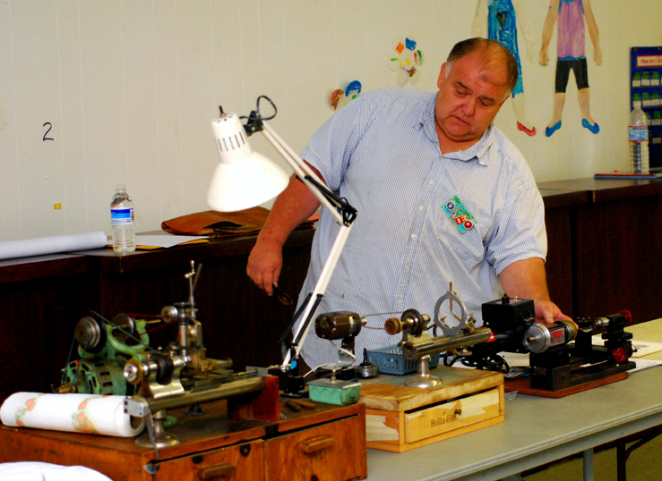
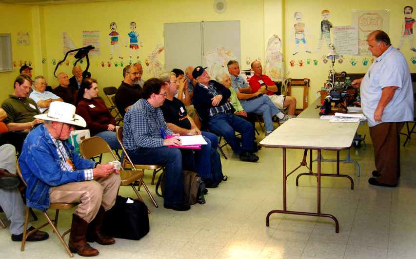
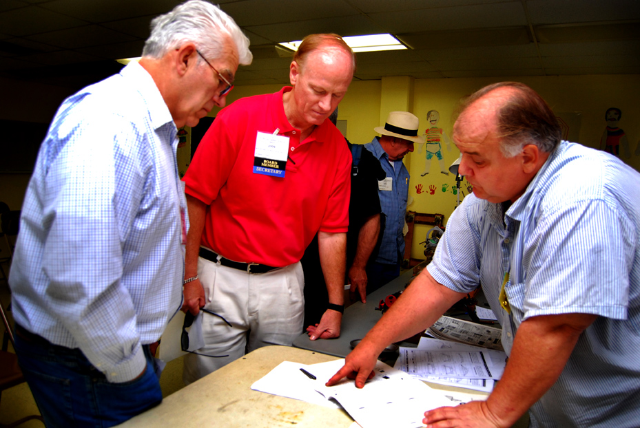
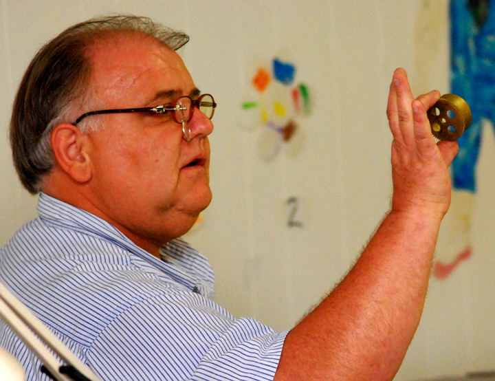

Tom Kochmann on Lathe Work
This is an archived report. Meeting places, times and people have changed since it was written. See Meetings for current details.

This presentation and the previous one on “Choosing your first lathe” presented by Chapter Vice President, Ron Bechler, demonstrate an active interest in this most important watch and clock making tool. – ed.
Tom credits his lathe mentor, Archie Perkins, for demonstrating the tools and techniques required for successful lathe work. Perkins is the author of an excellent book on small lathe work for clock and watch makers.
Tom set up a fine display of three small lathes on the table in the front of the meeting room: a wheel cutting lathe, a jeweler’s lathe, and a Sherline, used for clock repair work. The first lathe, a wheel cutting lathe, is an 8mm D-pattern lathe with a cross slide and a milling attachment. This lathe is also known as a WW lathe. Tom repaired clocks for 20 years before making his first wheel on the lathe. Wheel cutting is often farmed-out to people who specialize in this machining operation.

The next is a jeweler’s lathe: an 8mm D-pattern lathe with tool rest intended for the hand-held graver. This is also known as a WW lathe. For these lathes, almost always purchased well-used, Tom emphasizes hand operations. When a jeweler’s lathe and the accessories are new, the tolerances are quite fine, and machining style work will proceed quite nicely. The same is not true for a used, possibly abused tool. Gravers, hand-held turning tools, do not require any fine tolerances in the lathe, other than a smooth running spindle. The lathe operator’s hands will make any needed adjustments as the work proceeds.
One of the audience members asked Tom if drilling on the lathe required any special tooling. Tom said, with a new lathe, you could use a tail-stock mounted drill bit. With a used lathe, Tom places the drill bit into a pin-vise and drills by hand. Hand drilling is fast, results in fewer broken drill bits, and gets the job done. Drilling on the lathe is done when replacing a broken pivot.

The last of the three lathes on display is a Sherline, a currently manufactured small lathe that can be used for clock repair work. The screw-driven cross slide is especially handy for boring holes into larger parts, such as clock mainspring barrels.
With the proper skills and tooling, lathes are great time savers for the clockmaker. Work can proceed faster and with greater precision with a good lathe versus making do with lesser hand tools.
To properly execute most lathe operations, use magnification! Even larger clock parts have features that are too small to see and evaluate with the unaided eye. One defect that cannot be seen without magnification is the rounded shoulder that can be left when cutting a square shoulder on the end of a rod, or arbor. If the step between the thicker part of the arbor and the freshly turned pivot is not square all the way down into the very corner, this rounded "feature" could bind against the edge of the clock plate bushing and stop the clock.
The following lathe operations are commonly used in clock repair and should be mastered by the lathe user. Tom showed the group a drawing for each of the following operations illustrating the correct placement of the graver, the hand-held cutting tool, in relationship to the work-piece.
- Cutting a square shoulder on the end of a rod. This operation is used in pivot repair.
- Cutting a point on the end of a rod.
- Cutting a V into the end of a rod: This operation is required to set the center in the end of a rod prior to drilling a hole on the lathe.
- Cutting internal and external tapers: This operation is used in pivot replacement, also known as re-pivoting.
- Cutting a concave radius into a rod: This operation is used to create fly cutters for making wheels.
Tom uses the small Sherline lathe daily to speed his clock repair work. For example: replacing bushings in clock mainspring barrels. The lathe is easier to use and more accurate than the bushing machine for this operation.
Tom describes, in the following steps, how to replace the clock mainspring barrel bushing using a lathe.
- The barrel is held in the three jaw chuck, and the barrel location is adjusted so the teeth do not move in and out when the chuck is rotated. This centering operation ensures the new hole will be cut in to the center of the barrel in relationship to the teeth. This centering is important; the barrel will rotate about the bushing in the clock, and the teeth must not wobble about or the depthing between the barrel and the second wheel will be off. Also, the new bushing will be centered even if the old bushing was not correctly centered.
- A boring tool is mounted to the cross slide and a new bushing seat is cut into the wall of the barrel.
- The size of the resulting hole is not very important. The clockmaker will cut a replacement bushing to fit the new hole. Many clock repair operations are cut and fit. The fit is more important than the exact size of the resulting parts.
- The lathe is now used to turn a brass tube to the diameter of the new hole just bored into the clock barrel. This is a try-and-fit operation where the diameter of the bushing is turned down until it just fits inside the new hole in the barrel.
- When the bushing fits the hole, it is soldered into the barrel. Solder is not to be avoided in clock repair. Just use solder where the result is better than not using solder. In barrel re-bushing, the barrel wall is often too thin to support the bushing by friction, or pressure fit. Soldering a proper fitting joint results in a very strong and almost invisible repair. Clock manufacturers are not afraid of using solder; some French clocks have the barrel bushings soldered in at the factory. One of the chapter members noted that he uses Tix, a strong, low melting point solder for this work.
- The lathe can be used to face-off the mounted bushing if the bushing sticks out too far.
Lathe tooling
Tom then discussed a great tool for sharpening gravers and cutting other hard materials such as glass or carbide: the resin based diamond wheel. The concave wheel with the diamond cutting surface parallel to the face of the wheel is best for graver cutting. These cut hard materials without generating much heat; fantastic for cutting metals without needing to heat-treat the item after grinding.
Tom handed out illustrations of various shapes of diamond wheels. The medium cup wheel with the cutting surface on the "top" edge of the cup is best. The walls of the cup flair out from the mounting hole to the cutting surface; the walls are not parallel to each other like a straight sided drinking glass, but are flared like a martini glass. This geometry is quite versatile since it can be used to hone a clock pallet as well as sharpen lathe cutting tools.

This wheel does not come with an arbor for your lathe. Tom cut an arbor to fit his lathe and the diamond wheel. The arbor is held by the three jaw chuck; incidentally, the diameter on that side has little importance, but the cylinder must be even and have parallel walls in order for the chuck to properly grip the arbor.
Tom then showed us the arbor shoulder that sits against the wheel and the end that slips into the diamond wheel mounting hole. He did not measure the diameter of the arbor; he cut it until it just fit into the mounting hole. Tom would test the fit with the arbor still mounted on the lathe. Then Tom would cut a small V into the end of the arbor. With a centered V, a hole for a screw that will hold the diamond wheel in place can be drilled on the lathe. Once the hole was drilled, Tom used a tap to cut the threads for the mounting bolt.
Now this sounds like a lot of work, but with practice, making an arbor becomes a simple, fast operation that can save a lot of time and money in the clock repair shop. The companies who make the diamond wheels typically do not sell mounting arbors. This is not an issue for the lathe user who follows the arbor cutting procedure outlined by Tom.
An accessory, both useful and quite necessary for some operations, is the steady-rest. These can be purchased on eBay for the WW pattern lathe. The steady-rest is a circle of metal that is held to the bed of the lathe by a wing-nut, and has three threaded brass rods that screw into the metal circle and are positioned so the tips of all three meet at the lathe centerline. These tips support the work and prevent the work from deflecting due to the cutting forces applied to a longish work-piece. Some clock parts cannot be held firmly enough by the lathe chuck or collet, and need the extra support provided by the steady-rest to provide a firm cutting surface that results in a finer resulting finish.
The steady-rest must be made so the centerline of this unit will match the centerline of the lathe. To order the correct unit, just measure the distance between the bed and the center of the lathe spindle; this distance will be used to select the correct steady-rest for your lathe.
Lathe location
These lathes are small, but must be positioned properly for comfortable and accurate work. Tom recommends the base of the jeweler’s lathe be placed on a bench both 6 inches from the front of the bench and 6 inches from the left side of the bench. This is an ideal location for the right handed lathe user.
Many times the jeweler’s lathe comes without a motor or motor mount. A suitable motor can be mounted 8 inches from the lathe. Much further away than that will make for a belt that is so long it will vibrate; too close and the belt cannot be twisted so the lathe can be run in reverse without having to purchase a reversible motor.